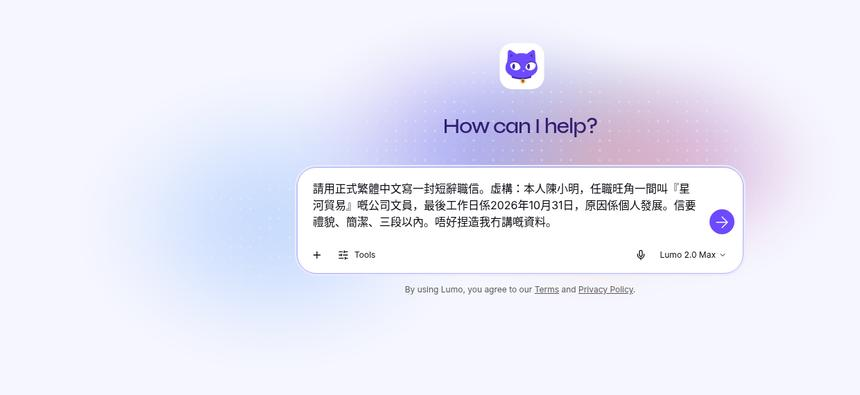
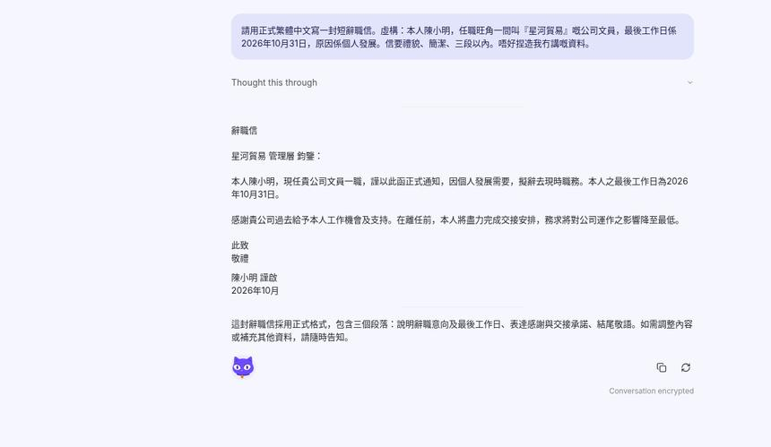
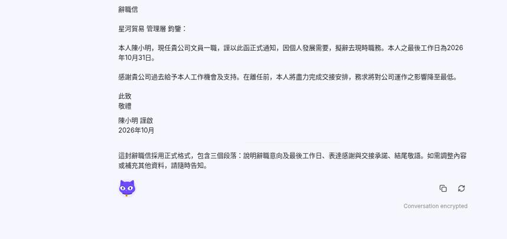

想寫辭職信又唔想將真公司名丟去普通聊天機械人。第25集用 Proton Lumo 嘅 Guest：唔使帳戶，打一句提示，等草稿，撳 Copy。示範用虛構「陳小明／星河貿易」，唔貼真公司。
Reel 一句講晒：Lumo｜私密寫好／辭職信
唔係法律或勞工意見：草稿只係寫作起點。通知期、最後工作日、合約點寫，以你份僱傭合約同勞工處資料為準。AI 可能出錯。
你會學到
- 點樣開 Lumo Guest，唔使帳戶打辭職提示
- 點樣撳紫色箭咀等草稿
- 點樣撳 Copy，改成真名同日期先寄
開始前準備
- 瀏覽器開 lumo.proton.me/guest（Guest 唔使帳戶）
- 準備虛構示範資料，或者你自己已經可以公開嘅事實：職位、最後工作日、原因一句
- 真公司名、員工編號、薪金、上司私人聯絡，呢版示範唔會打落去
可抄提示
下面係片入面打嘅示範句。人名同公司都係虛構。你自己用就換走，唔好連虛構名一齊寄出去。
請用正式繁體中文寫一封短辭職信。虛構：本人陳小明，任職旺角一間叫「星河貿易」嘅公司文員，最後工作日係2026年10月31日，原因係個人發展。信要禮貌、簡潔、三段以內。唔好捏造我冇講嘅資料。
3 步做法
-
開 Guest 打辭職提示：開 lumo.proton.me，用 Guest，唔使帳戶。將上面嗰段打入對話框。示範虛構「陳小明／星河貿易」，唔貼真公司。
畫面係空白對話加一段提示。模式示範見到 Lumo 2.0 Max。右下角係紫色圓形箭咀，aria 名稱係「Start generating」。未撳之前，提示仍然留喺輸入框。
Ghost Mode 可選。呢次示範保持關閉（Ghost OFF）。Guest 關窗即清；想留低對話先開帳戶。

真實畫面（2026-10-11 自行截圖，Guest）：提示打好，右下角紫色箭咀未撳。示範公司係虛構「星河貿易」。 -
撳紫箭咀：撳紫色箭咀（aria「Start generating」），等草稿。出齊先再睇，唔好見到第一句就當完成。
示範草稿用正式書面語：收件寫星河貿易管理層，正文寫陳小明、文員、最後工作日 2026年10月31日、個人發展，並有交接一句。署名係陳小明。
畫面底寫「Lumo can make mistakes. Please double-check responses.」回覆區亦見到 “Conversation encrypted”。

真實畫面（2026-10-11 自行截圖）：撳紫色箭咀之後，草稿用虛構「陳小明／星河貿易」寫成。 -
撳 Copy：草稿下面撳複製（Copy），抄走全文。貼去你自己嘅電郵或文件，改成真名、真公司同真日期，自己讀一次先寄。
AI 可能加你冇講嘅句子，例如多寫一句感謝、或者日期只寫到月份。對返你俾嘅事實：職位、最後工作日、原因。多咗出嚟嘅承諾（通知期、代通知金、推薦信）唔好照寄。
示範用虛構「陳小明／星河貿易」，唔貼真公司。呢封信唔係法律或勞工意見。

真實畫面（2026-10-11 自行截圖）：草稿尾段。回覆下面撳複製，改成真名同日期先寄。
常見錯誤／注意事項
- 打真公司名落示範：示範用虛構「陳小明／星河貿易」，唔貼真公司。真名、員工編號、薪金留返自己份稿先寫。
- 抄完就寄：先改名同日期，再對通知期。AI 可能寫錯最後工作日，或者加你冇講嘅承諾。
- 當勞工意見：點樣辭、使唔使代通知、假期點計，唔係 Lumo 可以話實。睇返合約，或者問勞工處。
- 以為 Guest 會幫你存檔：Guest 關窗即清。Ghost Mode 可選，呢次示範保持關閉。想留低先登入開帳戶。
- 當畫面永遠一樣：紫色箭咀、Lumo 2.0 Max、複製圖示以當日網站為準。
示範用虛構「陳小明／星河貿易」，唔貼真公司。
香港用戶留意
用瀏覽器開 Guest 就得，示範冇登入、冇裝 App。介面有英文掣（Start generating、Copy）同中文回覆，以你當日見到嘅語言為準。
官方說明
- Lumo Guest（Proton）
2026-10-11 核實：Guest 入口回 200。示範冇登入，打提示 → 撳紫色箭咀（aria「Start generating」）→ 等草稿 → 撳 Copy - Lumo（Proton 官方產品頁）
2026-10-11 再讀：官方寫所有同 Lumo 嘅對話以 zero-access encryption 儲存，Proton 自己都睇唔到。呢句講緊有儲存嘅對話；Guest 關窗即清係呢次示範嘅做法
（Guest 入口同產品頁當日打開；逐步畫面係同日截圖。介面可能更新，以官方為準）
原帖
睇原 Reel ↗（2026-10-12 發佈）